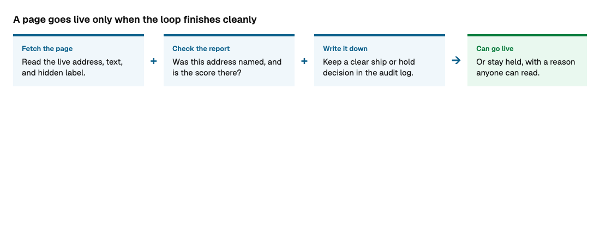
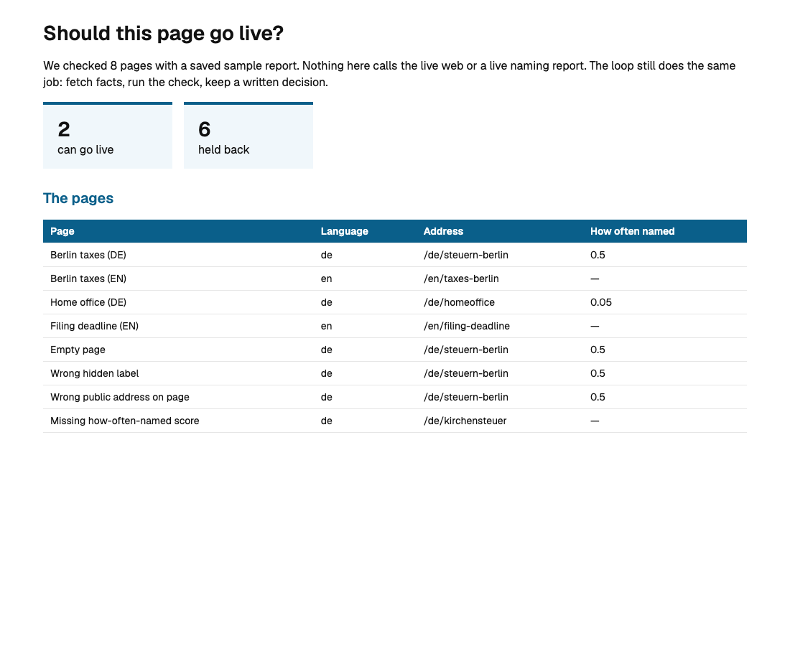
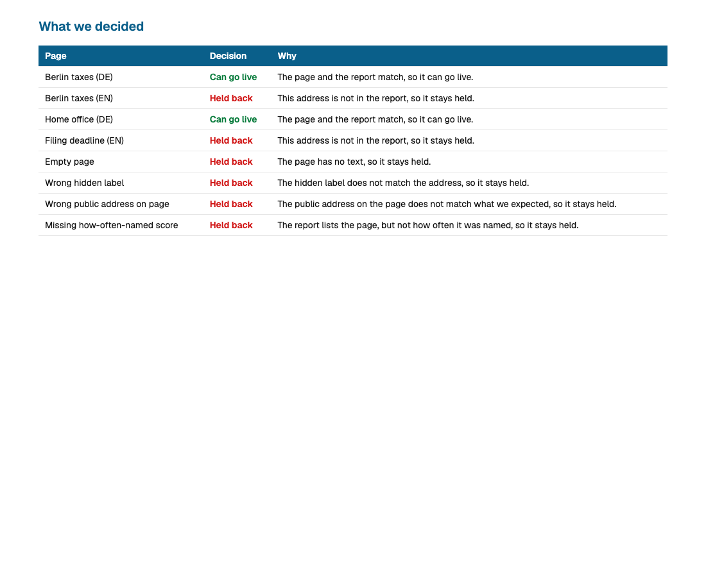

We checked 8 pages against a saved sample report. Nothing here calls the live web. The page cannot know whether it was named. The report can. The loop waits for both before it says ship or hold.
A page can go live when its address, text, and hidden label agree with the report. How often it was named can be low. A missing score holds it back. Every decision is written to an audit log you can open later.



Run the check again with python experiments.py. For a live fetch later, use python loop.py --live with a Firecrawl key.